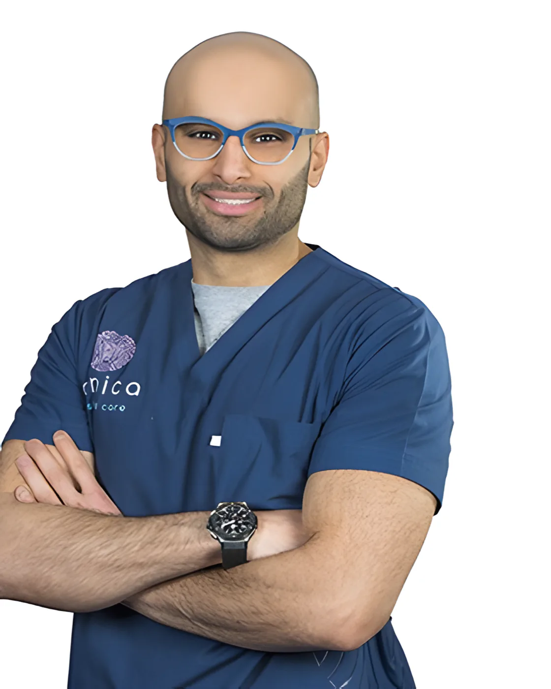
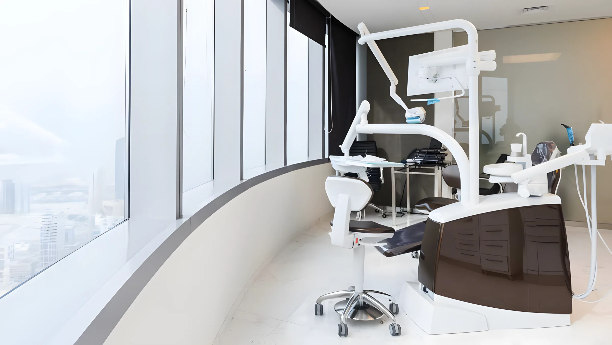
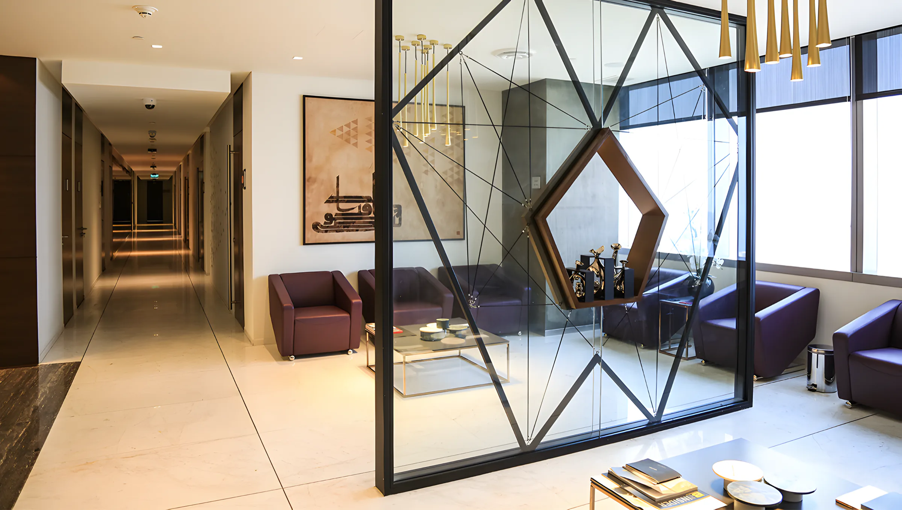
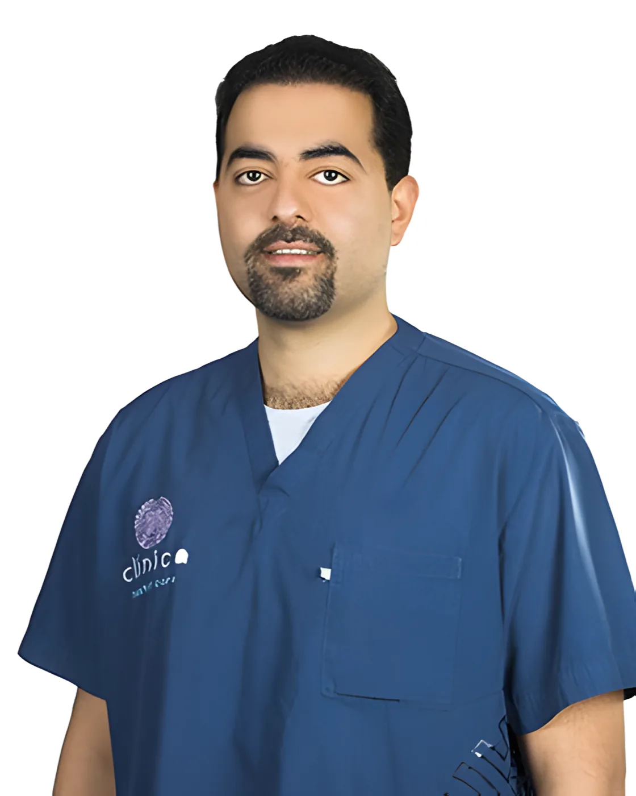
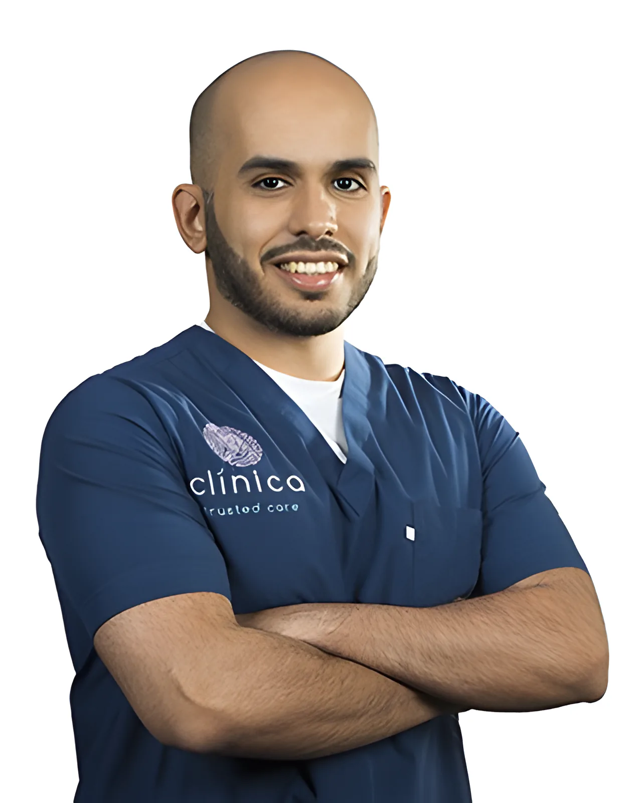
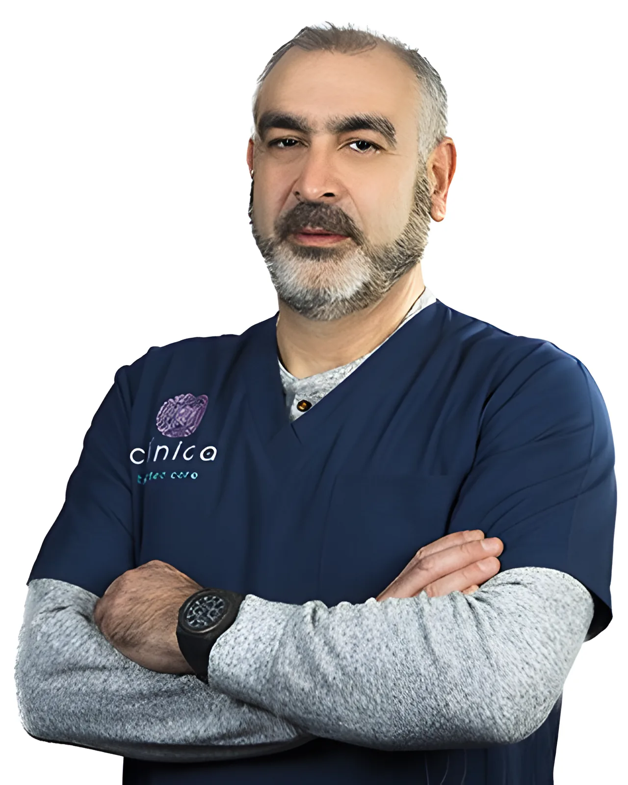
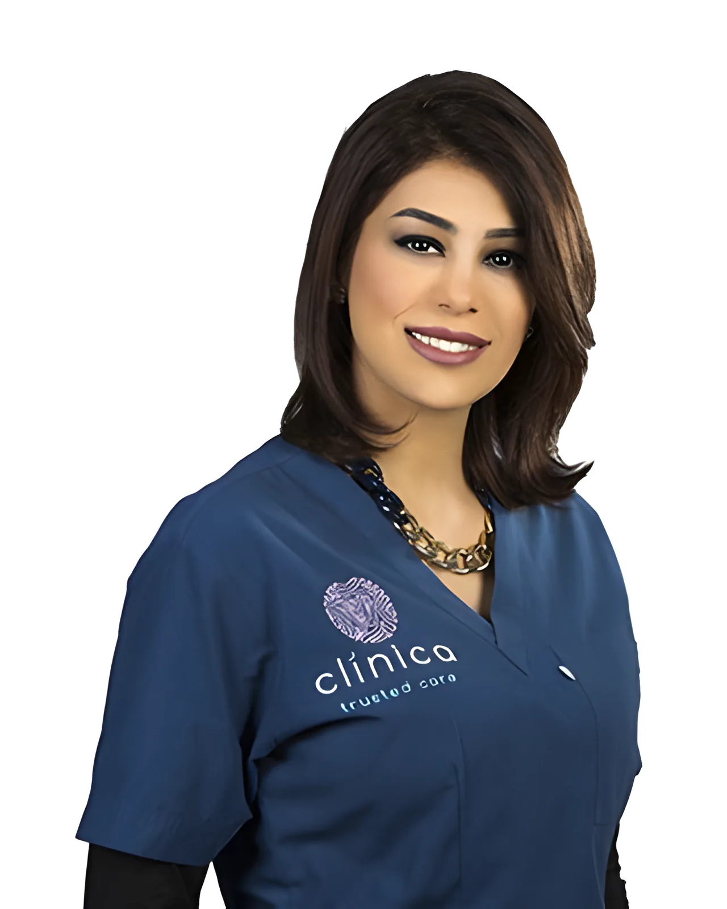

د. محمد
الصافي
رئيس الأطباء
- ماجستير في علاج جذور الأسنان مع تدريب سريري تحت الإشراف، جامعة وورويك

عيادة أسنان في الدور 43 من برج الحمراء في شرق. سبع غرف علاج خاصة، ومدينة الكويت كلها من النافذة.
افتتح مركز كلينيكا لطب الأسنان عام 2016 في برج الحمراء، في قلب مدينة الكويت. نقدّم خدمات الأسنان كلها تحت سقف واحد: الفحص والتنظيف، علاج العصب، التقويم، الزراعة، التبييض وجراحة الفم.
عياداتنا السبع كلها غرف خاصة. الكراسي مصممة لراحتك، وفيه مكان لمرافقك، وكل كرسي يطل على المدينة.
«كلينيكا ليست مجرد عيادة أسنان. نريدك أن تثق برعايتنا، فمرضانا من أهلنا.»

اطلب أي طبيب من أطبائنا بالاسم عند الاتصال.

رئيس الأطباء


أخصائي تقويم الأسنان

طبيب أسنان عام

طبيبة أولى
الزرعة تعوّض جذر السن المفقود، وتُثبّت فوقها تلبيسة. نفحص العظم واللثة أولاً، ثم نقول لك إذا كان السن في نفس اليوم مناسباً لك.
علاج الجذور هو تخصص د. محمد الصافي، وهو حاصل على الماجستير فيه من جامعة وورويك. ننظف العصب تحت تخدير موضعي، ونغلق القنوات، ويبقى السن.
للأسنان والفكين في غير مكانها، للأطفال والكبار. ننظر في نمو الوجه والأسنان والفكين، ونقترح الطريقة المناسبة لتعديلها. التقويم تخصص د. مشعان المشعان، وعنده ماجستير في تقويم الأسنان من كينغز كوليدج لندن.
التبييض من أسهل الطرق لتغيير شكل أسنانك. وإذا تبي أكثر من اللون، نشرح لك خيارات التجميل في الاستشارة.
رذاذ ناعم من الهواء والماء والبودرة يزيل البلاك والتصبغات عن الأسنان وعلى حدود اللثة. جزء من الفحص الدوري.
الطفل مو شخص كبير بحجم صغير، وما يقدر دائماً يصبر على الفحص. ناخذ أول زيارة بهدوء، ونوفر سد الشقوق لحماية الأضراس.
الخلع الجراحي، وخاصة ضروس العقل، هو أكثر عمليات جراحة الفم. وإذا كنت تخاف من طبيب الأسنان، اسأل عن التهدئة عند الحجز.
نفس الخطوات الأربع، سواء جيت لحشوة أو لطقم زراعة كامل.
نبدأ بتاريخك الطبي واستشارة كاملة. ناخذ وقتنا لنفهم اللي تبيه، ثم نشرح لك الخيارات.
التكلفة تعتمد على خطة العلاج. نعرض عليك الاثنين قبل ما نبدأ، فتختار وأنت تعرف الأرقام.
في غرفتك الخاصة في الدور 43، مع مكان لمرافقك. إذا كنت متوتر، اسأل عن التهدئة.
نحدد مواعيد المتابعة حسب حالة أسنانك، وكل الأعمال اللي نسويها عليها ضمان.
اتصل من السبت إلى الخميس، من 10 صباحاً إلى 9 مساءً. قول لنا شنو يضايقك وأي طبيب تبي، ونلقى لك موعد.
برج الحمراء للأعمال، الدور 43
شرق، مدينة الكويت
اطلع بمصاعد برج الأعمال إلى الدور 43. المواقف في مواقف البرج المشتركة، وتزدحم وقت الذروة، فخلّ لك كم دقيقة زيادة.
| السبت | 10 ص – 9 م |
| الأحد | 10 ص – 9 م |
| الاثنين | 10 ص – 9 م |
| الثلاثاء | 10 ص – 9 م |
| الأربعاء | 10 ص – 9 م |
| الخميس | 10 ص – 9 م |
| الجمعة | مغلق |